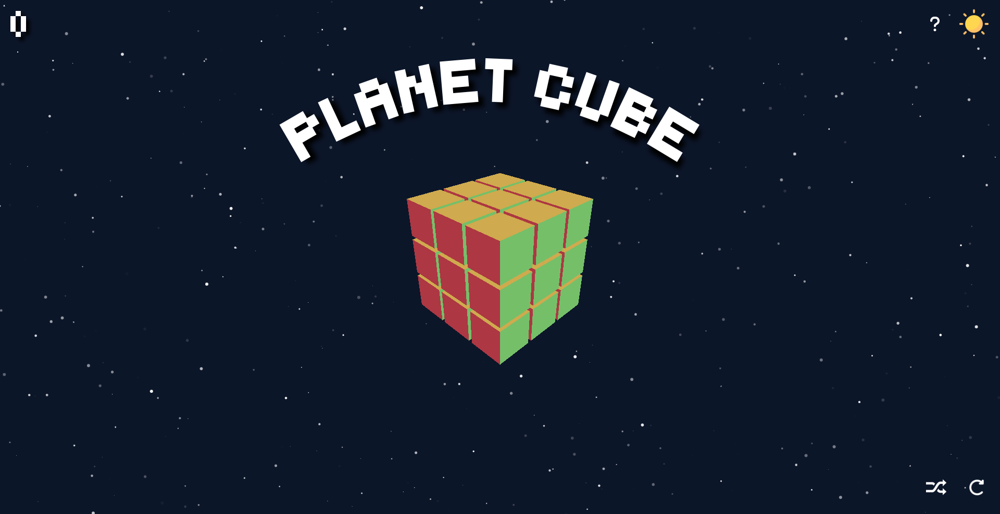

Planet Cube is a work-in-progress application which uses Three.js to simulate a fully functional 3D model of a rubix cube. The cube can be manipulated, randomly shuffled, automatically solved and reset to its original state.
Currently, the solving feature is a bit of a shortcut as it simply does the moves made in reverse, until it is solved. I am currently working on improving this feature by implementing a solving algorithm. I also plan to add a help button, start button, timer, improve the move counter and change the controls to be more intuitive.